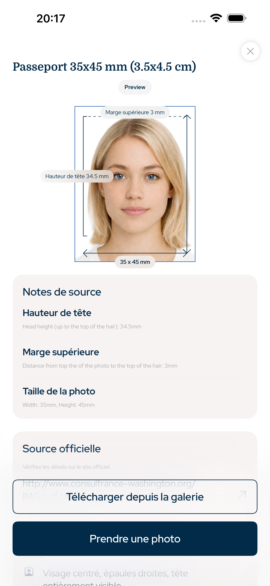

France · application photo d'identité, photo passeport, photo visa, photo permis, photo officielle iPhone
Photos d'identité, passeport et visa aux bonnes dimensions
Cette app iPhone prépare les photos d'identité, passeport, visa, titre de séjour et permis avec taille exacte, proportion de tête, marge haute, fond et export numérique ou imprimable.
- Visage
- Sans IA
- Cadrage
- Tête + marge haute
- Export
- Numérique + impression

Marge haute
précise
Proportion de tête
guidée
Exigences indexables
Conçue autour des règles officielles de géométrie photo
L'app se concentre sur les règles mesurables des photos de documents : taille, export en pixels, hauteur de tête, position du visage, marge haute, fond et mise en page d'impression.
Proportion de tête et marge haute
Aucune modification IA du visage
Fichier numérique et planche d'impression
France document types
Photos que cette app peut préparer
Application Photo d'Identité couvre les flux de travail courants pour les utilisateurs iPhone qui ont besoin d'un fichier numérique ou d'une planche prête à imprimer.
Photo d'identité
Photo passeport
Photo visa
Photo titre de séjour
Planche d'impression
Intégrité de la photo
Aucune modification IA du visage
Le flux de travail est volontairement pratique : recadrer l'image, aligner la tête, préserver le visage, préparer le fond, puis exporter la bonne taille. C'est conçu pour la préparation de photos de documents officiels, pas pour le retouche beauté.
1Sélectionnez le pays et le document
2Alignez la tête et la marge
3Exportez un fichier numérique ou une planche d'impression
Questions
FAQ
L'app modifie-t-elle le visage avec l'IA ?
Non. Elle ne change pas les traits du visage et se concentre sur le cadrage, la taille, le fond et l'export.
Puis-je préparer une photo d'identité ?
Oui. Choisissez le pays et le document pour appliquer les dimensions et le cadrage.
Puis-je imprimer la photo ?
Oui. Exportez un fichier numérique ou une planche prête à imprimer.
Application Photo d'Identité
Créez une photo d'identité, passeport, visa ou permis sur iPhone avec taille exacte, proportion de tête, marge haute et export prêt à imprimer.
Télécharger sur l'App Store